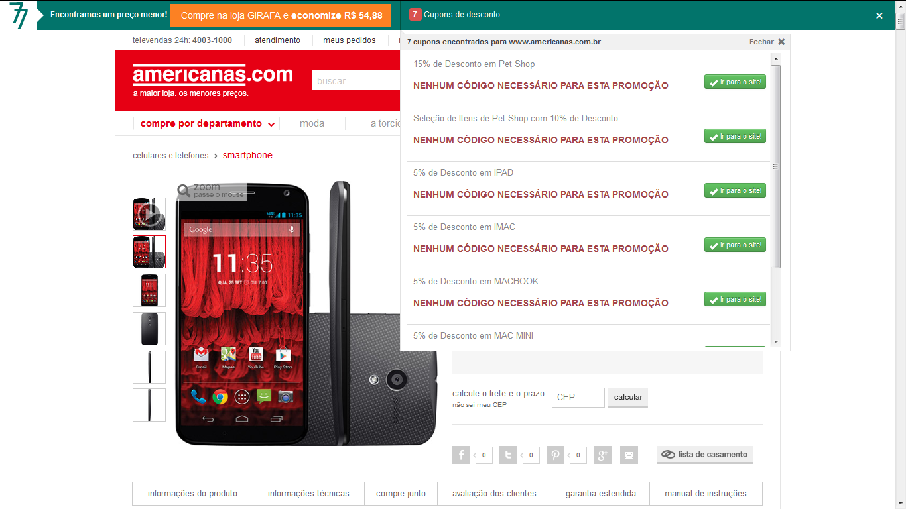

Toggle Navigation
Início
Sobre
Formação
Trabalhos
Mídia
Contato
O que é o Radar77?
O Radar77 é uma extensão desenvolvida em JavaScript e XUL para os navegadores Mozilla Firefox e Google Chrome, que tem como objetivo procurar o MENOR preço em um determinado produto pelo qual você está navegando.
Exemplo: Eu quero comprar um Smartphone, e então eu fui em uma loja virtual (Exemplo: Lojas Americanas) e ao clicar em um determinado produto do meu interesse, a extensão procurou um preço menor que aquele. Veja no exemplo:

Além disso, a extensão ainda procura CUPONS de desconto para aquela determinada loja que você está acessando! Isso tudo facilita na hora de você comprar, pois evita você ir a determinados sites tipo Buscapé para buscar um preço menor.
Gostou? Visite o site do projeto
www.radar77.com.br
VOLTAR
SOBRE
Joseph F. © Copyright 2014
SIGA